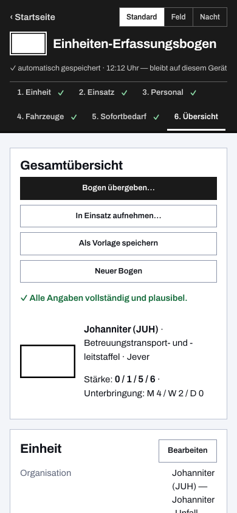
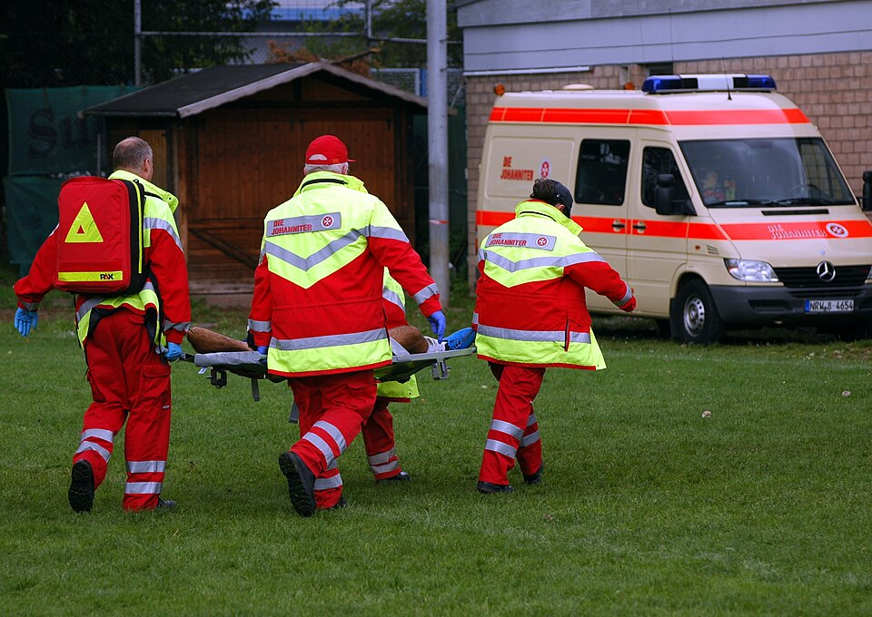

Einheiten-Erfassungsbogen für die Johanniter
Eine Schnelleinsatzgruppe ist schnell alarmiert — die Meldung, wer tatsächlich mit wie vielen Kräften und welchen Fahrzeugen eingetroffen ist, dauert auf Papier oft länger als die Anfahrt. Dieser digitale Einheiten-Erfassungsbogen ist das kostenlose Online-Tool für die Johanniter-Unfall-Hilfe: SEG oder Einsatzeinheit einmal erfassen, als Vorlage sichern — und bei jeder Alarmierung hast du die Stärkemeldung in Minuten fertig, als PDF, Datei oder QR-Code.
Für SEG, Einsatzeinheit und Sanitätsdienst
Der Bogen kennt die Johanniter als eigene Organisation: Begriffe, taktische Zeichen und Kennfarbe stellen sich um, sobald du die JUH gewählt hast. Die Stärke wird in der gewohnten Form Führer / Unterführer / Mannschaft / Gesamt gezählt, Fahrzeuge stehen mit Funkrufname und Kennzeichen im Bogen, und der Sofortbedarf — Verpflegung, Unterkunft, Kraftstoff, Material — hat seinen festen Platz. Auch die geplante Sanitätsdienst-Absicherung profitiert: Dein Bogen für das Konzert am Samstag ist die angepasste Kopie deiner gespeicherten Vorlage.
Einmal erfassen, immer wieder melden
Jeden ausgefüllten Bogen kannst du als eigene Vorlage speichern und beim nächsten Mal mustern: Wer nicht mitfährt, wird gestrichen, der Rest stimmt. Für die Katastrophenschutz-Einheiten, die die Hilfsorganisationen in mehreren Bundesländern stellen, liegen zudem fertige Landesvorlagen bei — samt Teileinheiten und Funkrufnamen nach Landesregelung.
Offline im Einsatz, QR-Code zur Übergabe
Nach dem ersten Aufruf arbeitet die App ohne Netz weiter — auf deinem Diensthandy genauso wie auf dem Tablet der Führungsgruppe. Übergeben wird per QR-Code: Er enthält den kompletten Bogen, die Gegenstelle scannt ihn und hat die Meldung im Gerät, ohne Internet und ohne Server dazwischen. Wie die Gegenseite daraus die Gesamtübersicht baut, steht unter Meldekopf digital.


Häufige Fragen aus der JUH
Können mehrere SEGs unter einem Einsatz geführt werden?
Ja. Die Einsatz-Sammlung bündelt beliebig viele Einheiten unter einem Einsatz oder einer Übung, summiert Stärke und Bedarf laufend und gibt alles als Sammel-PDF oder Datei an die nächste Führungsstelle weiter.
Auf welchen Geräten läuft die App?
Im Browser auf allen Systemen — nach dem ersten Aufruf auch offline. Für Windows, macOS, Linux und Android gibt es installierbare Apps; auf iPhone und iPad fügst du die Web-App über Safari zum Home-Bildschirm hinzu.
Braucht es eine Anmeldung oder eine Freigabe der IT?
Nein. Es gibt keine Konten und keinen Server; alle Daten bleiben lokal auf deinem Gerät (Datenschutzerklärung). Die App ist freie Software unter der EUPL-1.2 — der Quellcode liegt offen auf GitHub.